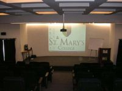

college
Tucked up, ideally, in the heart of the city, away from the hustle bustle of the growing city, in a peaceful location St. Mary’s boasts of noise free, pollution free environment.

computer lab
St. Mary's is a tech-savy college. The entire college is networked through Intranet, which facilitates all communication general circulars, notices from the teachers
library
St. Mary's library has a comprehensive collection of books, encyclopedias, dictionaries, books on personality development, general books and newspapers

entertainment
We firmly believe in the importance of growing in all facets of life, and our academic programme is hence enlivened by assignments, projects, technology,

cafeteria
Beautifully tiled surface of 4000 sq. ft., approx., hygienically maintained cafeteria provides the students with sumptuous snacks & cold beverages in the fun filled relaxed breaks

sports
A Basketball court and a Volleyball court in an area of 0.25 acre is a perfect place for budding sportsmen. Indoor games like table tennis, chess and caroms are also encouraged.